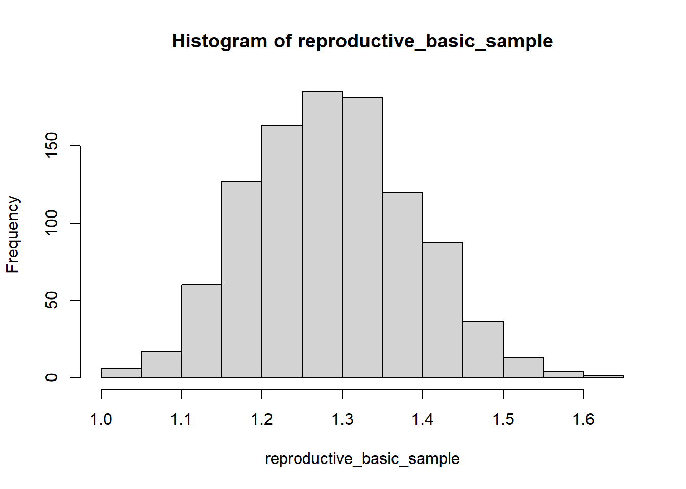
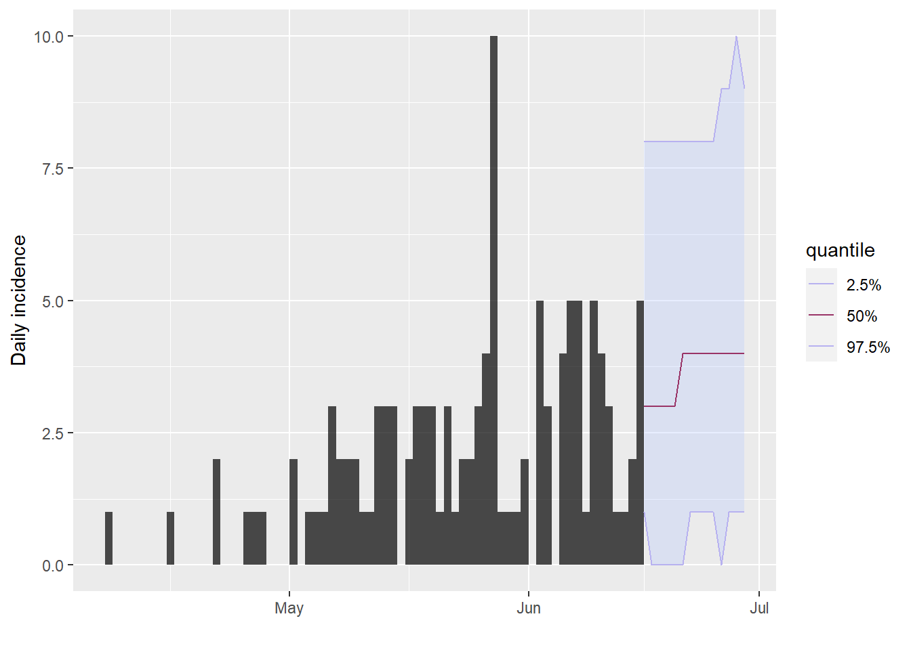

# Project the future trajectory of the outbreak
# Load required packages
library(outbreaks)
library(incidence2)
library(i2extras)
library(epiparameter)
library(distcrete)
library(epitrix)
library(projections)
library(tidyverse)
# Load the simulated Ebola outbreak data
data(ebola_sim_clean)
# Extract the first element of the list
linelist <- ebola_sim_clean$linelist
# Convert the data to an incidence2 object
incidence2_data <-
incidence2::incidence(
x = linelist,
date_index = "date_of_onset",
interval = "day"
)
# Filter the incidence2 object to keep the first 48 weeks.
incidence2_filter <- incidence2_data[1:48,]
# Convert the filtered incidence2 object to an incidence object
incidence1_filter <-
incidence2_filter %>%
tidyr::uncount(count) %>%
dplyr::pull(date_index) %>%
incidence::incidence()
# Model the incidence
incidence2_fit <-
i2extras::fit_curve(
x = incidence2_filter,
model = "poisson",
alpha = 0.05
)
# Extract parameter by disease, distribution, author
epidist_ebola_si <-
epiparameter::epiparam() %>%
filter(str_detect(disease,"Ebola")) %>%
filter(epi_distribution == "serial_interval") %>%
filter(region == "West Africa") %>%
filter(author == "WHO_Ebola_Response_Team") %>%
filter(year == 2015) %>%
epiparameter::as_epidist()
# Read epidist class object
# Read distribution: gamma
epidist_ebola_siDisease: Ebola Virus Disease
Pathogen: Ebola Virus
Epi Distribution: serial interval
Study: WHO, Ebola, Response, Team (2015). "West African Ebola Epidemic after
One Year — Slowing but Not Yet under Control." _The New England Journal
of Medicine_. doi:10.1056/NEJMc1414992
<https://doi.org/10.1056/NEJMc1414992>.
Distribution: gamma
Parameters:
shape: 2.188
scale: 6.490# Discretise the distribution
discrete_ebola_si <- epiparameter::discretise(epidist_ebola_si)
# Now read distribution: discrete gamma
discrete_ebola_siDisease: Ebola Virus Disease
Pathogen: Ebola Virus
Epi Distribution: serial interval
Study: WHO, Ebola, Response, Team (2015). "West African Ebola Epidemic after
One Year — Slowing but Not Yet under Control." _The New England Journal
of Medicine_. doi:10.1056/NEJMc1414992
<https://doi.org/10.1056/NEJMc1414992>.
Distribution: discrete gamma
Parameters:
shape: 2.188
scale: 6.490# Transform from 'epidist' class to 'distcrete' class object
distcrete_ebola_si <-
distcrete::distcrete(
name = "gamma",
shape = discrete_ebola_si$prob_dist$parameters$shape,
scale = discrete_ebola_si$prob_dist$parameters$scale,
interval = discrete_ebola_si$prob_dist$interval,
w = discrete_ebola_si$prob_dist$w
)
# Read distcrete class object
distcrete_ebola_siA discrete distribution
name: gamma
parameters:
shape: 2.18793402777778
scale: 6.49014084507042# Transform growth rate into reproductive number
reproductive_basic <-
epitrix::lm2R0_sample(
x = incidence2_fit %>%
pull(model) %>%
pluck(1),
w = discrete_ebola_si$prob_dist,
n = 500
)
# Write function to sample replicates of reproductive number
sample_function <-
function(x = reproductive_basic, n_sim = 1000){
mu <- mean(x)
sigma <- sd(x)
shape_scale <- epitrix::gamma_mucv2shapescale(
mu = mu,
cv = sigma / mu
)
sample_result <- rgamma(
n = n_sim,
shape = shape_scale$shape,
scale = shape_scale$scale
)
return(sample_result)
}
# Run function to sample replicates of reproductive number
reproductive_basic_sample <-
sample_function(
x = reproductive_basic,
n_sim = 1000
)
# Plot the sample distribution
hist(reproductive_basic_sample)
# Project the future incidence
# from incidence object and sample of basic reproductive number
incidence1_projection <-
projections::project(
x = incidence1_filter,
R = reproductive_basic_sample,
si = distcrete_ebola_si,
n_sim = 1000,
n_days = 14,
R_fix_within = TRUE
)
# Plot the incidence object with the projection
incidence1_filter %>%
plot() %>%
add_projections(
x = incidence1_projection,
quantiles = c(0.025, 0.5, 0.975)
)